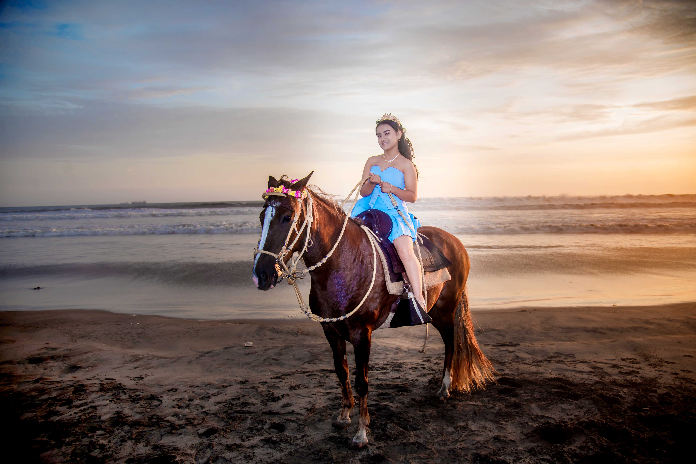
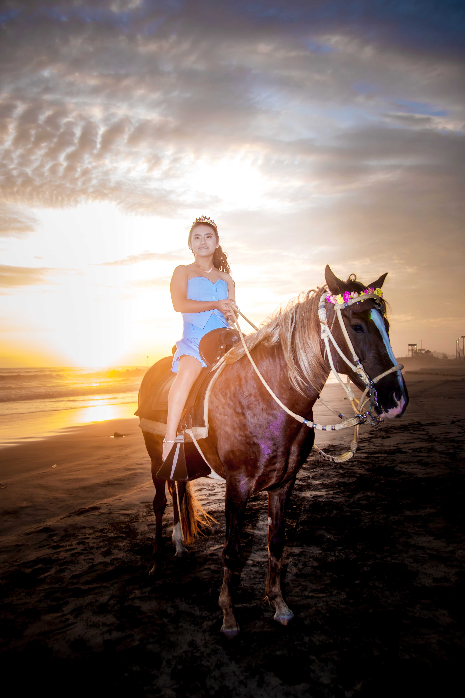
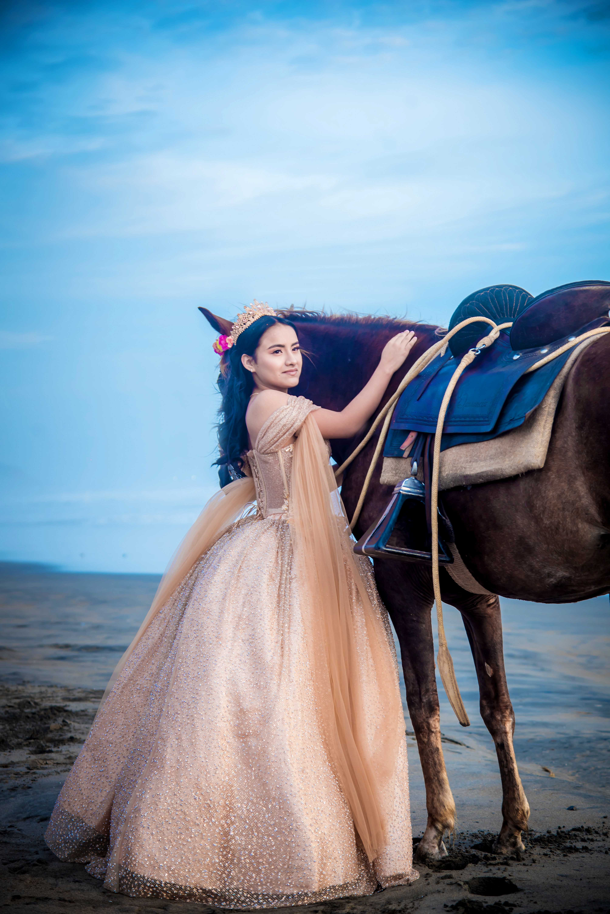
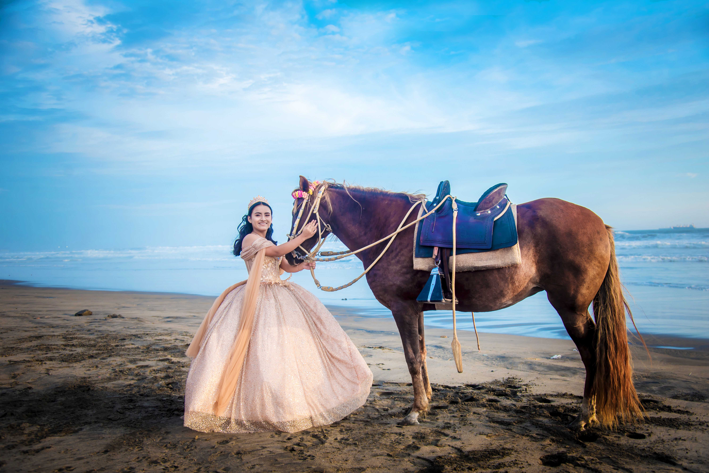

Mis 15 años
Con la bendición de Dios y el amor que mis padres me han dado, me siento feliz de llegar a este momento de mi vida, el día que dejaré atrás mi infancia y comenzaré un nuevo viaje.
“Mi mayor deseo es compartir con las personas que han estado para mí. Tú eres una de ellas.”
Mis Padres y Padrinos
Padres
- María Elizabeth Sotelo Saavedra
- Anthony Paolo Álvarez Díaz
Padrinos
- Sabrina Liliana Sotelo Solar
- Elvis Daniel Sotelo Saavedra
Confirma tu Asistencia
Nos encantaría contar con tu presencia. Por favor, confirma tu asistencia haciendo clic en el siguiente botón:
 Confirmar Asistencia
Confirmar Asistencia
Código de Vestimenta
-
Damas:
Vestido de cóctel o largo en tonos pastel o metálicos.
-
Caballeros:
Traje oscuro con corbata o pajarita.
-
Zapatos:
Formales y cómodos.
Galería de Fotos




A nuestra hija
“Querida Astrid, desde el momento en que te tuvimos en brazos supimos que serías nuestra mayor bendición. Cada día nos llenas de orgullo y satisfacción.”
“Al celebrar tus 15 años, vemos la maravillosa joven en la que te has convertido. Gracias por tu amor y alegría. Te amamos siempre.”